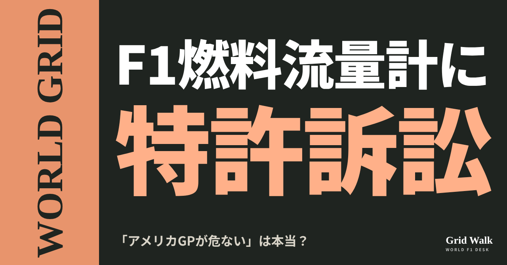
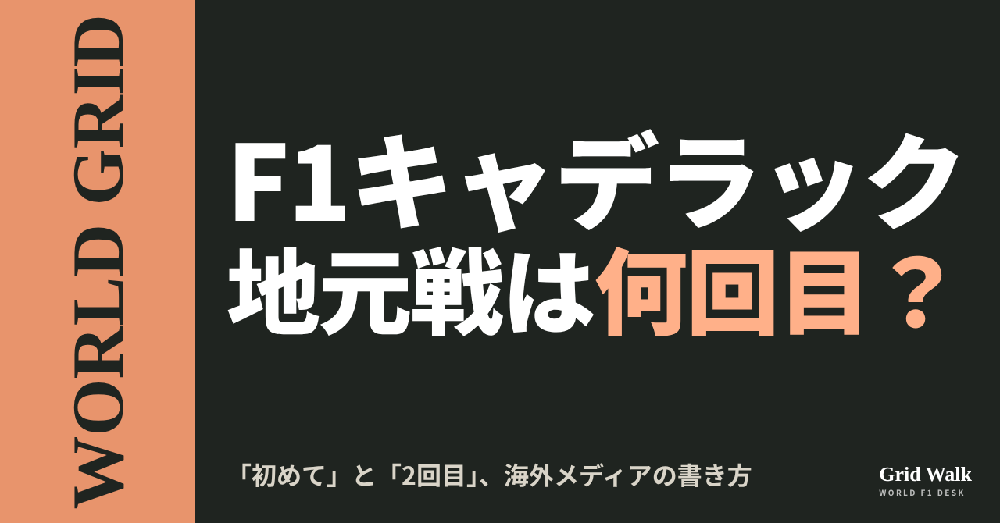
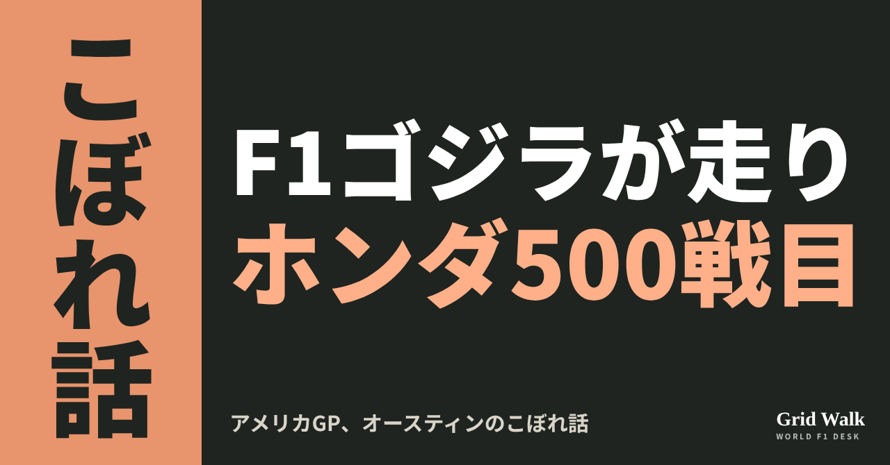

<meta charset="utf-8"><title>アメリカGPコラム note貼り付け</title>
<style>
/* one column of numbered paste steps; text steps vs image steps differ by marker */
:root{--bg:#F5F4F0;--card:#FFFFFF;--ink:#1D2321;--mute:#5F665F;--line:#DCDAD2;--btn:#1F5FBF;--btnok:#2E8B4F;--img:#E9F3EC;--imgink:#22663B;--sans:'IBM Plex Sans JP','Hiragino Sans','Noto Sans JP',sans-serif}
@media (prefers-color-scheme:dark){:root:not([data-theme="light"]){--bg:#171A19;--card:#202423;--ink:#ECEDE8;--mute:#A3AAA2;--line:#343937;--btn:#4D8BE6;--btnok:#3FA866;--img:#1E2C23;--imgink:#8FD3A6;color-scheme:dark}}
:root[data-theme="dark"]{--bg:#171A19;--card:#202423;--ink:#ECEDE8;--mute:#A3AAA2;--line:#343937;--btn:#4D8BE6;--btnok:#3FA866;--img:#1E2C23;--imgink:#8FD3A6;color-scheme:dark}
body{background:var(--bg);color:var(--ink);font-family:var(--sans);font-size:15px;line-height:1.75;padding:20px 16px 60px}
main{max-width:680px;margin:0 auto;display:grid;gap:28px}
header h1{font-size:22px;margin:0 0 6px;text-wrap:balance}
header p{margin:0;color:var(--mute);font-size:14px}
nav{display:flex;gap:8px;flex-wrap:wrap;margin-top:12px}
nav a{border:1px solid var(--line);border-radius:999px;padding:4px 14px;color:var(--ink);text-decoration:none;font-size:14px;background:var(--card)}
.part h2{font-size:18px;line-height:1.5;margin:0 0 12px;text-wrap:balance;display:flex;gap:10px;align-items:baseline;flex-wrap:wrap}
.tag{font-size:13px;background:var(--ink);color:var(--bg);border-radius:6px;padding:1px 9px}
.steps{list-style:none;margin:0;padding:0;display:grid;gap:12px}
.st{background:var(--card);border:1px solid var(--line);border-radius:12px;padding:12px;min-width:0}
.hd{display:flex;align-items:center;gap:8px;margin-bottom:8px}
.no{width:26px;height:26px;border-radius:50%;background:var(--btn);color:#fff;display:inline-flex;align-items:center;justify-content:center;font-size:13px;font-weight:700;flex:0 0 26px}
.im .no{background:var(--btnok)}
.hd em{font-style:normal;font-size:12px;background:var(--img);color:var(--imgink);border-radius:6px;padding:0 8px}
.bx{font-size:13.5px;line-height:1.7;border:1px solid var(--line);border-radius:8px;padding:8px 10px;max-height:110px;overflow:auto;overflow-wrap:anywhere}
.bx.tall{max-height:150px}.bx p{margin:0 0 6px}.bx h2{font-size:14px;margin:8px 0 4px}.bx a{color:var(--btn)}
.st img{display:block;width:100%;max-width:100%;border:1px solid var(--line);border-radius:8px}
.sub{font-size:12.5px;color:var(--mute);margin:6px 0 0}
.cp{width:100%;margin-top:8px;padding:12px;border:0;border-radius:10px;background:var(--btn);color:#fff;font:600 15px var(--sans);cursor:pointer}
.cp.ok{background:var(--btnok)}.cp.dl{background:var(--btnok)}.cp:focus-visible{outline:3px solid var(--ink);outline-offset:2px}
.xh{font-size:15px;margin:20px 0 10px}
.fb{font-size:13px;line-height:1.7;margin:8px 0 0;padding:8px 10px;border-radius:8px;background:var(--img);color:var(--imgink)}
.opts{display:grid;grid-template-columns:repeat(auto-fill,minmax(240px,1fr));gap:10px}
.opt{min-width:0}.opt img{display:block;width:100%;border:1px solid var(--line);border-radius:8px}
.ol{display:flex;align-items:center;gap:8px;margin-top:6px}.ol b{font-size:13px;flex:0 0 auto}.ol .on{font-size:12.5px;color:var(--mute);flex:1;min-width:0}.ol .cp{width:auto;flex:0 0 auto;padding:9px 14px}.ol .cp{margin:0;padding:9px}
.toast{font-size:13px;color:var(--mute);margin-top:6px}
</style>
<main><header><h1>アメリカGPコラム note貼り付け</h1><p>3本あります。上から順に進めてください。青い番号は文章、緑の番号は画像です。</p></header><section class="part"><h2><span class="tag">WORLD GRID</span>「アメリカGPが危ない」は本当？ F1燃料流量計に特許訴訟</h2><ol class="steps"><li class="st im"><div class="hd"><span class="no">1</span><b>見出し画像</b><em>画像</em></div><div class="opts"><div class="opt"><div class="ol"><b>F1</b><span class="on">サイトのカード画像と同じ</span><button class="cp dl" data-img="img/fuel-flow-patent-20261023.png" data-name="fuel-flow-patent-20261023_見出し画像_F1.png">ダウンロード</button></div></div></div></li>
<li class="st"><div class="hd"><span class="no">2</span><b>タイトル</b></div><div class="bx" id="p1t">「アメリカGPが危ない」は本当？ F1燃料流量計に特許訴訟</div><button class="cp" data-plain="p1t">タイトルをコピー</button></li>
<li class="st"><div class="hd"><span class="no">3</span><b>本文</b></div><div class="bx tall" id="p1r"><p>「アメリカGPが危ない」。10月19日、イタリアのサイトにこんな見出しが並びました。全車が積むFIA指定の燃料流量計をめぐり、アメリカの裁判所に特許の訴えが出されたからです。決勝は本当に止まるのか。各国の記事と裁判所の記録から確かめました。</p><p>全文は F1 Grid Walk で → <a href="https://f1gridwalk.github.io/lens/fuel-flow-patent-20261023/?utm_source=note&amp;utm_campaign=fuel-flow-patent-20261023">https://f1gridwalk.github.io/lens/fuel-flow-patent-20261023/?utm_source=note&amp;utm_campaign=fuel-flow-patent-20261023</a></p><h2>誰が、誰を、どこで訴えた？</h2><p>訴えたのはイギリスのセントロニクス、訴えられたのはドイツのアレングラです。裁判所の記録（Justia Dockets）によると、提訴は10月16日、テキサス州西部地区の連邦地方裁判所で、セントロニクスは陪審による裁判を求めています。提訴の当日に、アメリカの法律ニュースBloomberg Lawが報じました。</p><p>2社は、FIAの入札で争った間柄です。セントロニクスは2018年から2025年まで、F1の燃料流量計をただ1社で納めていました。2026〜2030年の契約は2024年11月にアレングラが取り、今季は全車がアレングラ製を積んでいます（F1i.com、PlanetF1）。</p><p>セントロニクスの主張は、アレングラの流量計が自社のアメリカ特許（第11,391,609号、2022年7月成立）の測り方を使っている、というものです。液体の通り道に、位相を変えた超音波を逆向きに送って流れを測る方法です。2025年8月にヨーロッパ版の特許で通知したのに使い続けたとして、訴状は侵害を「故意」と書いています（PlanetF1）。オースティン、マイアミ、ラスベガスの3レースで、FIAとチームに使うよう促したとも訴えています（Nextgen-Auto）。</p><h2>流量計は、なぜ全車に必要？</h2><p>燃料流量計は、エンジンへ流れる燃料の量を測る装置です。イタリアのFanpageによると、FIAの技術規則で全車が承認された流量計を使うことになっていて、装置は燃料タンクの中に収まり、パワーユニットへ行く燃料はすべてここを通ります。</p><p>イギリスのCrash.netは、FIAが燃料の流れを測ることでエンジンの力に上限をかけ、全チームが同じ最大の速さでしかエネルギーを使えないようにしている、と説明しています。燃料流量の制限が守られているかを見張る、全車共通の「審判」です。</p><h2>決勝は止まる？</h2><p>セントロニクスが求めているのは、損害の賠償（2022年までさかのぼる逸失利益とロイヤリティ。故意と認められれば最大3倍）と、アメリカでの侵害を止める「恒久的な差し止め」です（PlanetF1、F1i.com）。</p><p>レースにすぐ響くのは、裁判所が緊急の一時的な差し止め命令を出した場合です。PlanetF1によると、セントロニクスは今の時点ではそれを求めておらず、決勝はアレングラの流量計を積んだまま行われる見込みです。Fanpageも見出しで「オースティンのGPが危ないのは、一つの場合だけ」とし、記事の冒頭で「裁判官の緊急の処分だけが、レースに問題を生むだろう」とまとめています。</p><p>訴状によると、FIAは2025年9月17日、シングルシーター部門責任者ニコラス・トンバジスに代わる担当者を通じてセントロニクスの通知を受け取り、内容を「承知した」と返していました（PlanetF1）。アレングラのアメリカの弁護士は、2026年4月にセントロニクス側が送った請求の書面に反論していました（F1i.com、PlanetF1）。PlanetF1はFIAとアレングラにコメントを求めましたが、返答は載っていません。</p><h2>見出しの温度は、国で違った</h2><p>イタリアでは、RMC Motoriが「流量計の訴訟でアメリカGPが危うい」、Formula1.itが「アメリカGPが危ない」と打ちました。ただFormula1.itも本文では「現時点で、アレングラのセンサーの使用を禁じる命令は確認されていない」と書いています（サイトの要約 https://f1gridwalk.github.io/news/it-formula1it-sentronics-allengra-flowmeter-suit/ ）。</p><p>スペインのMotorsport.comスペイン語版は、見出しで特許の争いが「F1のサプライヤーを揺さぶる」としつつ、本文では週末が「まったく影響を受けない」。イギリスのCrash.netも「どんな形でも影響を受けない見込み」としました。フランスのNextgen-Autoは「オースティンの週末を乱すことはないはず」としたうえで、裁判が進めば「もっと大きな意味を持つかもしれない」と書きました。</p><p>編集部としては、今週末のオースティンについては心配しなくてよさそうだと見ています。気になるのはその先です。PlanetF1は、裁判の中でアレングラがファームウェアやソースコード、設計資料の開示を求められる可能性を挙げています。全車の燃料を見張る装置の中身がどこまで表に出るのかが、見どころになりそうです。</p><p><strong>全車共通の部品をめぐる、アメリカの裁判。あなたはどこまで気になりますか？</strong></p><p>━━━━━━━━━━</p><p><strong>F1 Grid Walk では、世界のF1ニュースを毎日日本語でまとめています。</strong></p><p>海外の記事の要約を、毎日載せています。</p><p><a href="https://f1gridwalk.github.io/">https://f1gridwalk.github.io/</a></p><p>ほかの海外記事も読みたい方は、F1 Grid Walkへ。</p><p><a href="https://f1gridwalk.github.io/lens/fuel-flow-patent-20261023/">https://f1gridwalk.github.io/lens/fuel-flow-patent-20261023/</a></p><p>━━━━━━━━━━</p><p><a href="https://www.formula1.it/news/33359/1/il-gp-degli-stati-uniti-e-a-rischio-una-causa-sui-brevetti-scuote-la-fia">出典：Formula1.it（イタリア）</a></p><p><a href="https://www.rmcmotori.com/f1/f1-clamoroso-a-rischio-il-gp-usa-per-unazione-legale-sul-flussometro/">出典：RMC Motori（イタリア）</a></p><p><a href="https://www.fanpage.it/sport/motori/la-formula-1-e-al-centro-di-una-causa-negli-usa-sul-flussometro-il-gp-di-austin-rischia-solo-in-un-caso/">出典：Fanpage.it（イタリア）</a></p><p><a href="https://dockets.justia.com/docket/texas/txwdce/1%3A2026cv02927/1172939749">出典：Justia Dockets（アメリカ）</a></p><p><a href="https://news.bloomberglaw.com/ip-law/f1-supplier-sued-over-patent-claims-ahead-of-us-grand-prix-race">出典：Bloomberg Law（アメリカ）</a></p><p><a href="https://www.planetf1.com/news/f1-lawsuit-former-fia-supplier-takes-rival-to-court">出典：PlanetF1（イギリス）</a></p><p><a href="https://f1i.com/news/575585-formula-1-fuel-flow-dispute-lands-in-court-ahead-of-austin-gp.html">出典：F1i.com（フランス）</a></p><p><a href="https://www.crash.net/f1/news/1107913/1/brewing-f1-lawsuit-eve-united-states-gp-explained">出典：Crash.net（イギリス）</a></p><p><a href="https://es.motorsport.com/f1/news/conflicto-patente-proveedores-antes-austin/10866496/">出典：Motorsport.com（スペイン語版）（スペイン）</a></p><p><a href="https://motorsport.nextgen-auto.com/fr/formule-1/un-litige-sur-les-capteurs-du-debit-d-essence-eclate-en-f1,212517.html">出典：Nextgen-Auto（フランス）</a></p></div><button class="cp" data-rich="p1r">本文をコピー</button></li>
<li class="st"><div class="hd"><span class="no">4</span><b>ハッシュタグ</b></div><div class="bx" id="p1g">#F1 #F1jp #アメリカGP #オースティン #FIA #燃料流量計 #特許 #パワーユニット #WORLDGRID #F1ニュース #フォーミュラ1 #モータースポーツ #海外F1 #F1好きと繋がりたい #F1GridWalk</div><button class="cp" data-plain="p1g">ハッシュタグをコピー</button></li>
</ol><h3 class="xh">X に投稿（note を公開したあと）</h3><ol class="steps"><li class="st"><div class="hd"><b>① note からシェアするときに添える文</b></div><div class="bx" id="p1x0">イタリアのサイトが「アメリカGPが危ない」と打った、F1燃料流量計の特許訴訟。テキサスの連邦地裁への提訴で、緊急の差し止めは求めていません。各国の見出しの温度差をnoteにまとめました #F1jp #アメリカGP</div><button class="cp" data-plain="p1x0">コピー</button></li>
<li class="st"><div class="hd"><b>② ①への返信</b></div><div class="bx" id="p1x1">ほかの海外記事も読みたい方は、F1 Grid Walkへ。
https://f1gridwalk.github.io/lens/fuel-flow-patent-20261023/?utm_source=x&amp;utm_campaign=fuel-flow-patent-20261023</div><button class="cp" data-plain="p1x1">コピー</button></li>
<li class="st"><div class="hd"><b>③ ②への返信</b></div><div class="bx" id="p1x2">毎日の海外F1ニュースは、日本語でこちらにまとめています。
https://f1gridwalk.github.io/</div><button class="cp" data-plain="p1x2">コピー</button></li>
</ol></section><section class="part"><h2><span class="tag">WORLD GRID</span>キャデラックの地元レースは何回目？ 海外メディアは「初めて」「2回目」</h2><ol class="steps"><li class="st im"><div class="hd"><span class="no">1</span><b>見出し画像</b><em>画像</em></div><div class="opts"><div class="opt"><div class="ol"><b>C1</b><span class="on">サイトのカード画像と同じ</span><button class="cp dl" data-img="img/cadillac-home-race-20261023.png" data-name="cadillac-home-race-20261023_見出し画像_C1.png">ダウンロード</button></div></div></div></li>
<li class="st"><div class="hd"><span class="no">2</span><b>タイトル</b></div><div class="bx" id="p2t">キャデラックの地元レースは何回目？ 海外メディアは「初めて」「2回目」</div><button class="cp" data-plain="p2t">タイトルをコピー</button></li>
<li class="st"><div class="hd"><span class="no">3</span><b>本文</b></div><div class="bx tall" id="p2r"><p>キャデラックが、カウボーイ風の特別カラーでオースティンのアメリカGPに乗り込みます。金曜のFP1では、ペレスに代わってコルトン・ハータが走ります。ところが、この週末をチームの「何回目の地元レース」と書くかは、媒体によって違いました。アメリカとほかの国の記事では、目を向けたところも少し違います。</p><p>全文は F1 Grid Walk で → <a href="https://f1gridwalk.github.io/lens/cadillac-home-race-20261023/?utm_source=note&amp;utm_campaign=cadillac-home-race-20261023">https://f1gridwalk.github.io/lens/cadillac-home-race-20261023/?utm_source=note&amp;utm_campaign=cadillac-home-race-20261023</a></p><h2>「初めての地元」と「2回目」</h2><p>キャデラックは5月3日のマイアミGPで、アメリカでのレースを初めて走りました。11月にはラスベガスGPも控えています。そのうえで、オースティンの週末について、各媒体はこう書きました。</p><p>オランダのRacingNews365は「初めての地元グランプリ」。オーストラリアのSpeedcafeは「2026年シーズン2回目の地元での登場」。ドイツのMotorsport-Total.comは「1年目にある3回の地元戦の2回目」。オーストリアのSpeedweekは「初めての正式なアメリカGP」と書き、「マイアミでも5月にレースをしたが、それはマイアミGPという名前だった」と説明を添えました。チーム代表のブコウスキー自身は「今季2回目の地元レース」と呼んでいます（RACER、Motorsport-Total.com）。</p><h2>アメリカの記事は「ハータ」と「刺しゅう」</h2><p>アメリカのRACERは、ハータのFP1を見出しにしました。ハータは2019年、このコースでインディカー初優勝を挙げています。</p><blockquote><p>「COTAで、アメリカのファンの前でMAC-26を走らせるのは特別なものになるでしょう」「このコースでF1マシンに乗り込むのは、一周回って原点に戻ってきたような気持ちです」（コルトン・ハータ、RACER／アメリカ）</p></blockquote><p>アメリカの自動車メディア、duPont REGISTRYとGM Authorityは、特別カラーの作り方を詳しく書きました。もとはジーンズやカウボーイシャツのチェーンステッチと鞍の飾り彫りで、オースティンの街並みやCOTAのコース図、50の星、サボテンも隠されているといいます。担当は、テキサス出身のGMのデザイナー、ヴィンセント・トレイナです。</p><blockquote><p>「リバリー全体が車に直接刺しゅうされているように見えます。とてもかっこいい」（ヴィンセント・トレイナ、GM Authority／アメリカ）</p></blockquote><h2>ほかの国の記事は、まだ0点から</h2><p>ドイツのMotorsport-Total.comは、アップグレードと特別カラーを伝えたうえで、「通常の状況なら、チームに現実的な選手権ポイントのチャンスはなさそうだ」と書き、キャデラックがまだF1初得点を待っていることに触れました。Speedcafeも「コンストラクターズ選手権の最下位でオースティンに向かい、2026年にまだ1点も取っていない唯一のチーム」としています。</p><p>ただ、きれいに二つに分かれるわけではありません。アメリカのRoundtable Sports（Yahoo Sportsに配信）も、冷却系を「今季、信頼性の大きな問題」と書き、2台合わせて「すでに12回のリタイア」と数字を挙げました。</p><h2>チームの人たちの言葉</h2><blockquote><p>「シンガポールで、厳しい戦いのすえに2台とも完走した、しっかりした週末のあとです。アメリカに来ることは、チーム全体の力になります」「フロアと冷却の小さなアップグレードを、評価のために持ち込む予定です」（マルチン・ブコウスキー代表、RACER／アメリカ）</p></blockquote><blockquote><p>「スタンドにはアメリカとメキシコのファンがたくさんいるので、本当にもうひとつの地元レースのように感じます」（ペレス、Motorsport-Total.com／ドイツ）</p></blockquote><p>CEOのダン・タウリスは、マイアミのあとAP通信にこう話していました。</p><blockquote><p>「初めて地元でレースをする重圧は、最初の大きなアップグレードもあって、とても大きなものでした。でも、チームもドライバーもよくやってくれました」「本物の進歩がちらりと見えていて、それがもっと欲しいという気持ちにさせてくれます」（ダン・タウリス、AP通信／アメリカ）</p></blockquote><p>編集部としては、「初めて」と「2回目」の違いは、レースの名前で数えるか、アメリカでのレースで数えるかの違いから来ていると見ています。アメリカの記事は人と物語に、ほかの国の記事は得点に目が向きやすいようですが、アメリカにもリタイアの数を書いた記事はありました。</p><p><strong>あなたなら、オースティンをキャデラックの何回目の地元レースと数えますか？</strong></p><p>━━━━━━━━━━</p><p><strong>F1 Grid Walk では、世界のF1ニュースを毎日日本語でまとめています。</strong></p><p>海外の記事の要約を、毎日載せています。</p><p><a href="https://f1gridwalk.github.io/">https://f1gridwalk.github.io/</a></p><p>ほかの海外記事も読みたい方は、F1 Grid Walkへ。</p><p><a href="https://f1gridwalk.github.io/lens/cadillac-home-race-20261023/">https://f1gridwalk.github.io/lens/cadillac-home-race-20261023/</a></p><p>━━━━━━━━━━</p><p><a href="https://racer.com/2026/10/21/herta-pumped-up-for-special-fp1-outing-at-cota">出典：RACER（アメリカ）</a></p><p><a href="https://news.dupontregistry.com/blogs/cadillac/cadillac-f1-goes-full-western-for-the-2026-u-s-grand-prix-at-cota">出典：duPont REGISTRY News（アメリカ）</a></p><p><a href="https://gmauthority.com/blog/2026/10/cadillac-f1-team-gets-western-for-united-states-grand-prix">出典：GM Authority（アメリカ）</a></p><p><a href="https://sports.yahoo.com/articles/f1-2026-symbols-behind-cadillacs-030327337.html">出典：Roundtable Sports（Yahoo Sports）（アメリカ）</a></p><p><a href="https://www.wsls.com/sports/2026/05/04/cadillacs-new-f1-team-makes-its-us-debut-in-miami-as-both-cars-finish-for-a-third-straight-race/">出典：AP通信（WSLS）（アメリカ）</a></p><p><a href="https://racingnews365.com/cadillac-ride-into-austin-with-special-cowboy-us-grand-prix-livery">出典：RacingNews365（オランダ）</a></p><p><a href="https://speedcafe.com/f1-news-2026-united-states-gp-austin-cadillac-special-livery-cowboy-gallery-pictures-home-race-colton-herta/">出典：Speedcafe（オーストラリア）</a></p><p><a href="https://www.motorsport-total.com/formel-1/news/cadillac-faehrt-in-austin-mit-upgrades-sonderlackierung-und-colton-herta-26102013">出典：Motorsport-Total.com（ドイツ）</a></p><p><a href="https://www.speedweek.com/en/a/formula-1/cadillac-austin-gp-colton-herta-rookie-session">出典：Speedweek（英語版）（オーストリア）</a></p></div><button class="cp" data-rich="p2r">本文をコピー</button></li>
<li class="st"><div class="hd"><span class="no">4</span><b>ハッシュタグ</b></div><div class="bx" id="p2g">#F1 #F1jp #キャデラック #アメリカGP #オースティン #コルトンハータ #ペレス #WORLDGRID #F1ニュース #フォーミュラ1 #モータースポーツ #海外F1 #F1好きと繋がりたい #F1GridWalk</div><button class="cp" data-plain="p2g">ハッシュタグをコピー</button></li>
</ol><h3 class="xh">X に投稿（note を公開したあと）</h3><ol class="steps"><li class="st"><div class="hd"><b>① note からシェアするときに添える文</b></div><div class="bx" id="p2x0">キャデラックのオースティンは「初めての地元GP」？それとも「2回目」？ 海外の媒体で書き方が分かれました。アメリカのメディアの見方と並べて、noteにまとめました #F1jp #キャデラック</div><button class="cp" data-plain="p2x0">コピー</button></li>
<li class="st"><div class="hd"><b>② ①への返信</b></div><div class="bx" id="p2x1">ほかの海外記事も読みたい方は、F1 Grid Walkへ。
https://f1gridwalk.github.io/lens/cadillac-home-race-20261023/?utm_source=x&amp;utm_campaign=cadillac-home-race-20261023</div><button class="cp" data-plain="p2x1">コピー</button></li>
<li class="st"><div class="hd"><b>③ ②への返信</b></div><div class="bx" id="p2x2">毎日の海外F1ニュースは、日本語でこちらにまとめています。
https://f1gridwalk.github.io/</div><button class="cp" data-plain="p2x2">コピー</button></li>
</ol></section><section class="part"><h2><span class="tag">OFF GRID</span>ゴジラが走り、ホンダは500戦目。オースティンのこぼれ話</h2><ol class="steps"><li class="st im"><div class="hd"><span class="no">1</span><b>見出し画像</b><em>画像</em></div><div class="opts"><div class="opt"><div class="ol"><b>O1</b><span class="on">サイトのカード画像と同じ</span><button class="cp dl" data-img="img/austin-godzilla-honda500-20261023.png" data-name="austin-godzilla-honda500-20261023_見出し画像_O1.png">ダウンロード</button></div></div></div></li>
<li class="st"><div class="hd"><span class="no">2</span><b>タイトル</b></div><div class="bx" id="p3t">ゴジラが走り、ホンダは500戦目。オースティンのこぼれ話</div><button class="cp" data-plain="p3t">タイトルをコピー</button></li>
<li class="st"><div class="hd"><span class="no">3</span><b>本文</b></div><div class="bx tall" id="p3r"><p>10月23〜25日のアメリカGP（オースティン）は、レースの外も楽しそうです。ハースの車には「ゴジラ」、アストンマーティンの車にはホンダの「500戦」の記念ロゴ。キャデラックはカウボーイ風です。</p><p>全文は F1 Grid Walk で → <a href="https://f1gridwalk.github.io/lens/austin-godzilla-honda500-20261023/?utm_source=note&amp;utm_campaign=austin-godzilla-honda500-20261023">https://f1gridwalk.github.io/lens/austin-godzilla-honda500-20261023/?utm_source=note&amp;utm_campaign=austin-godzilla-honda500-20261023</a></p><h2>ハースに「ゴジラ」、なぜ？</h2><p>F1公式サイトによると、ハースはアメリカGPで、ゴジラをテーマにした特別カラーで走ります。組む相手は、ゴジラの本家である日本の映画会社、東宝。ハースは今季を通して東宝と組んでいて、3月の日本GPでも最初のゴジラ・カラーを走らせました。F1-Gateによると、今回はその第2弾です。</p><p>きっかけは新作映画です。F1-Gateによると、今回のデザインは、11月6日にアメリカで劇場公開される『ゴジラ-0.0（Godzilla Minus Zero）』を記念したもの。PlanetF1によると、シリーズ39作目の映画です。映画館より少し早く、F1のコースでゴジラが走るわけです。</p><p>GPblogによると、白・黒・赤のいつもの色は残しつつ、車体に青の模様が大きく入り、サイドポッドには大きなゴジラの絵が描かれています。3月の発表のとき、小松礼雄代表は「ゴジラのような世界的なアイコンをこのスポーツに持ち込めるのは光栄だ」と話していました（PlanetF1）。</p><h2>スーツも、ヘルメットも</h2><p>F1-Gateによると、オコンとベアマンはゴジラ柄のレーシングスーツで走り、ハースが支援するF1アカデミーのケイリー・カントリーマンも、ゴジラ仕様のスーツを着る予定です。ベアマンはヘルメットも合わせました。</p><blockquote><p>「今回は、ゴジラを記念した2度目の特別カラーリングを披露する。僕もそれに合わせたヘルメットを用意している」（ベアマン、F1-Gate）</p></blockquote><p>F1公式サイトによると、オースティンはマイアミ、ラスベガスと並ぶ、ハースの3つのホームレースのひとつ。オコンは「チームのホームレースだということを意識せずにはいられない」と話しています（F1-Gate）。</p><h2>ホンダ、500戦目</h2><p>同じ週末、ホンダはF1で通算500戦目を迎えます。motorsport.com日本版によると、アストンマーティンAMR26のエンジンカウル後部とノーズの「Honda」ロゴに並んで、記念ロゴが付きます。HRCのエンジニアも、同じロゴの特別ユニフォームを着ます（F1-Gate）。</p><p>では、500はどう数えたのか。F1-Gateによると、ホンダが発表した500戦は、「エンジンまたはパワーユニットの登録名称が『Honda』であり、公式予選を通過して決勝への出走権利を獲得したグランプリ」が対象です。ホンダは2021年末でF1参戦を終了し、2022〜25年はHRCがレッドブル・パワートレインズへの技術支援を続けました（F1-Gate）。この4年間が500に入っているかどうかは、記事には書かれていません。ネットの掲示板にも、ここを尋ねる書き込みがありました（F1のアレ）。</p><p>初参戦は1964年のドイツGP。翌1965年のメキシコGPで、RA272に乗るリッチー・ギンサーが初優勝しました（F1-Gate）。HRCの渡辺康治社長は、「数々の挑戦と挫折、そして歓喜の瞬間を重ね」、通算500戦の節目を迎えられることを「うれしく思います」と話しています（motorsport.com日本版）。</p><h2>オースティンとホンダ、5年前</h2><p>autosport webによると、2021年のアメリカGPでは、ホンダがアメリカなどで広く展開するAcuraブランドのロゴを付けて4台が走り、フェルスタッペンが優勝。ホンダにとって1991年以来、30年ぶりのアメリカGP制覇でした。表彰台にはコンストラクターの代表として、山本雅史マネージングディレクターが上がりました。しかもその日、10月24日は、1965年のメキシコGPでホンダがF1初勝利を挙げたのと同じ日でした。</p><h2>キャデラックはカウボーイ</h2><p>ドイツのMotorsport-Totalによると、キャデラックのMAC-26は、テキサスらしい「カウボーイ・デザイン」で走ります。最初のホームレースだった5月のマイアミに続き、2つ目のアメリカのレースでも特別カラーです。</p><p>順位には関係ありませんが、編集部としては、週末の楽しみが増える話だと見ています。中継で、青いゴジラの車とノーズの記念ロゴを探してみてはいかがでしょう。</p><p><strong>今年の特別カラーで、あなたのお気に入りはどれですか？</strong></p><p>━━━━━━━━━━</p><p><strong>F1 Grid Walk では、世界のF1ニュースを毎日日本語でまとめています。</strong></p><p>海外の記事の要約を、毎日載せています。</p><p><a href="https://f1gridwalk.github.io/">https://f1gridwalk.github.io/</a></p><p>ほかの海外記事も読みたい方は、F1 Grid Walkへ。</p><p><a href="https://f1gridwalk.github.io/lens/austin-godzilla-honda500-20261023/">https://f1gridwalk.github.io/lens/austin-godzilla-honda500-20261023/</a></p><p>━━━━━━━━━━</p><p><a href="https://www.formula1.com/en/latest/article/gallery-haas-reveal-striking-godzilla-themed-livery-for-united-states-grand-prix-in-austin.37aecsdQPx4DOh7q1qrYTX">出典：Formula1.com（イギリス）</a></p><p><a href="https://f1-gate.com/haas/229264.html">出典：F1-Gate.com（日本）</a></p><p><a href="https://www.planetf1.com/news/haas-godzilla-japanese-grand-prix-2026-livery">出典：PlanetF1（イギリス）</a></p><p><a href="https://www.gpblog.com/en/news/haas-unleash-godzilla-with-spectacular-new-livery-for-home-austin-grand-prix">出典：GPblog（英語版）（オランダ）</a></p><p><a href="https://jp.motorsport.com/f1/news/F1-2026-rd18-usa-honda-500th-race-anniversary/10866439/">出典：motorsport.com日本版（日本）</a></p><p><a href="https://f1-gate.com/honda/229400.html">出典：F1-Gate.com（日本）</a></p><p><a href="https://f1are.com/blog-entry-4003.html">出典：F1のアレ（日本）</a></p><p><a href="https://www.as-web.jp/f1/752438">出典：autosport web（日本）</a></p><p><a href="https://www.motorsport-total.com/formel-1/news/cadillac-faehrt-in-austin-mit-upgrades-sonderlackierung-und-colton-herta-26102013">出典：Motorsport-Total.com（ドイツ）</a></p></div><button class="cp" data-rich="p3r">本文をコピー</button></li>
<li class="st"><div class="hd"><span class="no">4</span><b>ハッシュタグ</b></div><div class="bx" id="p3g">#F1 #F1jp #アメリカGP #オースティン #ハース #ゴジラ #ホンダ #アストンマーティン #F1こぼれ話 #OFFGRID #フォーミュラ1 #モータースポーツ #F1ニュース #海外F1 #F1好きと繋がりたい #F1GridWalk</div><button class="cp" data-plain="p3g">ハッシュタグをコピー</button></li>
</ol><h3 class="xh">X に投稿（note を公開したあと）</h3><ol class="steps"><li class="st"><div class="hd"><b>① note からシェアするときに添える文</b></div><div class="bx" id="p3x0">ハースは東宝とのコラボの「ゴジラ」カラー第2弾、ホンダはF1参戦500戦目の記念ロゴ。アメリカGP、オースティンの週末のこぼれ話をnoteにまとめました #F1jp #F1こぼれ話</div><button class="cp" data-plain="p3x0">コピー</button></li>
<li class="st"><div class="hd"><b>② ①への返信</b></div><div class="bx" id="p3x1">ほかの海外記事も読みたい方は、F1 Grid Walkへ。
https://f1gridwalk.github.io/lens/austin-godzilla-honda500-20261023/?utm_source=x&amp;utm_campaign=austin-godzilla-honda500-20261023</div><button class="cp" data-plain="p3x1">コピー</button></li>
<li class="st"><div class="hd"><b>③ ②への返信</b></div><div class="bx" id="p3x2">毎日の海外F1ニュースは、日本語でこちらにまとめています。
https://f1gridwalk.github.io/</div><button class="cp" data-plain="p3x2">コピー</button></li>
</ol></section></main><script>
function done(b,msg){const t=b.dataset.t||b.textContent;b.dataset.t=t;b.classList.add('ok');b.textContent=msg||'コピーしました';setTimeout(()=>{b.classList.remove('ok');b.textContent=t},2000)}
function selectEl(el){const r=document.createRange();r.selectNodeContents(el);const s=getSelection();s.removeAllRanges();s.addRange(r)}
async function rich(el,b){
  try{await navigator.clipboard.write([new ClipboardItem({'text/html':new Blob([el.innerHTML],{type:'text/html'}),'text/plain':new Blob([el.innerText],{type:'text/plain'})})]);done(b);return}catch(e){}
  selectEl(el);let ok=false;try{ok=document.execCommand('copy')}catch(e){}
  if(ok){getSelection().removeAllRanges();done(b)}else{done(b,'選択しました。コピーしてください')}}
async function plain(el,b){
  try{await navigator.clipboard.writeText(el.innerText);done(b);return}catch(e){}
  selectEl(el);let ok=false;try{ok=document.execCommand('copy')}catch(e){}
  if(ok){getSelection().removeAllRanges();done(b)}else{done(b,'選択しました。コピーしてください')}}
let dlns=null;(async()=>{try{dlns=await window.claude?.use?.("downloads")}catch(e){dlns=null}})();
async function img(src,b){
  b.dataset.t=b.dataset.t||b.textContent;
  if(!dlns){try{dlns=await window.claude?.use?.("downloads")}catch(e){}}
  if(!dlns){b.textContent='ダウンロードできませんでした';setTimeout(()=>{b.textContent=b.dataset.t},3500);return}
  try{const blob=await fetch(src).then(r=>r.blob());b.textContent='保存の確認を開いています…';
    await dlns.save({filename:b.dataset.name,data:blob});done(b,'ダウンロードしました')}
  catch(e){const c=e&&e.code;b.textContent=c==='declined'?'キャンセルしました':c==='rate_limited'?'少し待ってからもう一度押してください':'ダウンロードできませんでした';setTimeout(()=>{b.textContent=b.dataset.t},3500)}}
document.querySelectorAll('.cp').forEach(b=>b.addEventListener('click',()=>{
  if(b.dataset.rich)rich(document.getElementById(b.dataset.rich),b);
  else if(b.dataset.plain)plain(document.getElementById(b.dataset.plain),b);
  else img(b.dataset.img,b)}));
</script>